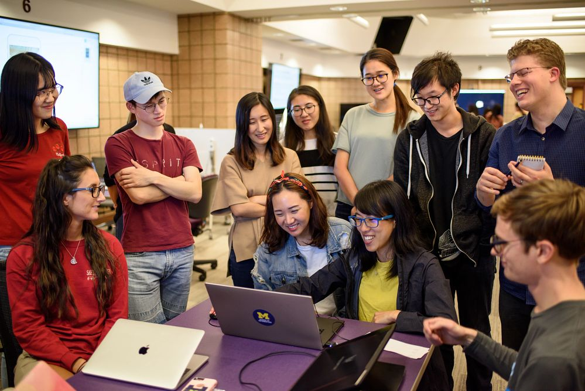

At the University of Michigan School of Information (UMSI), we are committed to supporting our students' academic success by offering a wide array of resources and services.
Our academic advising team provides personalized guidance to help you navigate your curriculum, select courses, and address any academic challenges or questions you may encounter during your studies.
UMSI students also have access to the extensive collections and study spaces within the University Library system, offering both digital and physical resources essential for research and coursework.
Additionally, our specialized tutoring services and the UMSI Writing Center are available to support you in mastering complex subjects and enhancing your written communication skills.
By utilizing these academic resources, UMSI students can thrive in their studies and achieve their educational goals.
UMSI Peer Tutoring Program
In partnership with our UMSI faculty, the UMSI Peer Tutoring program is an opportunity for UMSI students and students taking UMSI courses to engage with peer tutors and receive assistance and support in UMSI courses.
For more information regarding student support and tutoring, please email umsi.academicsuccess@umich.edu.
UMSI Programming Tutoring
UMSI Programming Peer Tutoring Information Available for the below courses:
- SI 106 Programs, Information, and People
- SI 206 Data-Oriented Programming
- SI 506 Programming I
- SI 507 Intermediate Programming
- General Python support
If you have questions regarding the Programming Peer Tutoring, you can email Professor Anthony Whyte at arwhyte@umich.edu and/or the UMSI Academic Success Team at umsi.academicsuccess@umich.edu for support.
UMSI Math Tutoring
UMSI Math Peer Tutoring Information Available for the below subject areas:
- Linear Algebra
- Statistics
- General Math related course support
If you have questions regarding Math Peer Tutoring, you can email the UMSI Academic Success Team at umsi.academicsuccess@umich.edu for support and/or if you are interested in applying to be a Math Peer Tutor.
UMSI Peer Tutors
Book 1:1 appointments with our peer tutors:
SI 106 and SI 206 support:
Tamariah Davis
Hi there! I'm Tamariah, and it's great to meet you! I'm currently an AMDP student in the MSI, focusing on Big Data Analytics. I recently graduated with a BSI in Information Analysis this past May. If you're a visual learner or want to explore new ways of understanding your coursework, I'm here to help as your peer tutor. Outside of school, you'll find me on the tennis court, spending time with friends, or getting involved in community activities. Looking forward to connecting with you!
SI 106, SI 206, SI 506, SI 507 & General Programming Specific Support:
Prem Ganesan
Hi there! I’m a second-year master’s student diving deep into the world of health informatics, building on a strong foundation from my computer science master’s degree. With 5 years of Python experience under my belt, I’ve tackled everything from data analysis to machine learning and AI, all in the fascinating realm of healthcare. When I’m not coding, you’ll likely find me on the soccer field, juggling my passion for the game with professional-level play. I’m all about making our sessions interactive, insightful, and fun! Let’s connect the tech dots together while keeping the energy high—just like a great match on the field!
Akash Dewan
Hey! My name is Akash Dewan and I am a senior in the BSI program on the Information Analysis pathway with minors in Computer Science and Digital Studies. I have an extensive background working with Python and SQL and would love to help you out in any of the following classes: SI 106, SI 206/506, SI 305, and SI 330. I am looking to go into Data Analytics / Quantitative Research in the Media/Entertainment Industry so if that is something that aligns with you, please reach out! Outside of academics, I am an avid filmmaker, photographer, and music lover so feel free to hit me with any questions about balancing school with art / ways to get involved artistically on campus! Or if you just wanna yap about existential topics...~
Math Tutors:
Ayush Shah
I’m Ayush Shah, and I’m currently pursuing the Big Data Track here at UMSI. With experience as a peer tutor during my undergraduate studies, I have developed strong skills in data analysis and visualization, and I’m passionate about applying these skills to the sports domain. My expertise lies in interpreting complex datasets and deriving actionable insights, particularly in sports analytics. In my free time, I follow a wide range of sports, including soccer, F1, tennis, and have recently become interested in American football
Book an appointment with Ayush
Rahat Naseem
I am here to support you with algebra, statistics, and any math-related questions you have. I am passionate about helping students overcome math anxiety by encouraging a shift from a fixed mindset ("I'm not good at math") to a growth mindset ("I can learn and improve in math"). With my experience in linear algebra, calculus, and a variety of other math topics, I can help you tackle homework, clarify concepts, and prepare for exams. Additionally, I can also assist with SI-425 and SI-370. My goal is to make math more accessible and enjoyable, and I’m excited to help you succeed and reach your academic goals.
Book an appointment with Rahat
Nuzhat Zahan
Hey there! I'm Nuzhat – Your Math Peer Tutor. I’m a second-year MSI student in the Big Data Track, and during my undergrad in Industrial Engineering, I took a bunch of math credits. I’m excited to help you with all things math! Whether it’s algebra, calculus, or stats, I’ve got six years of tutoring experience breaking down tricky concepts and making them easier to understand. If you’re stuck on homework, prepping for an exam, or just want to brush up on some skills, I’m here to help. You can book a session with your queries, and we’ll take it from there!